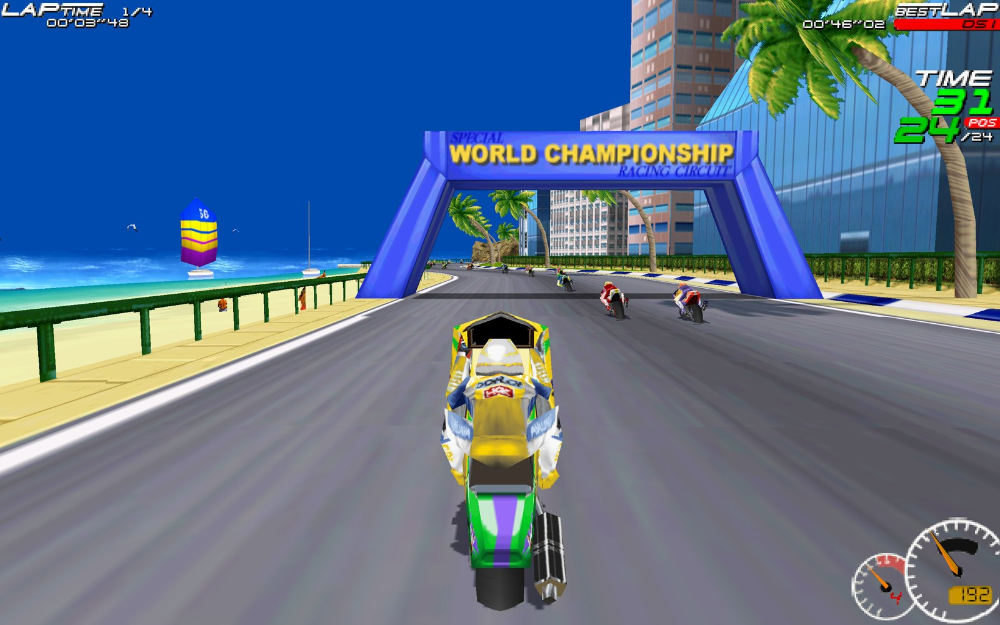
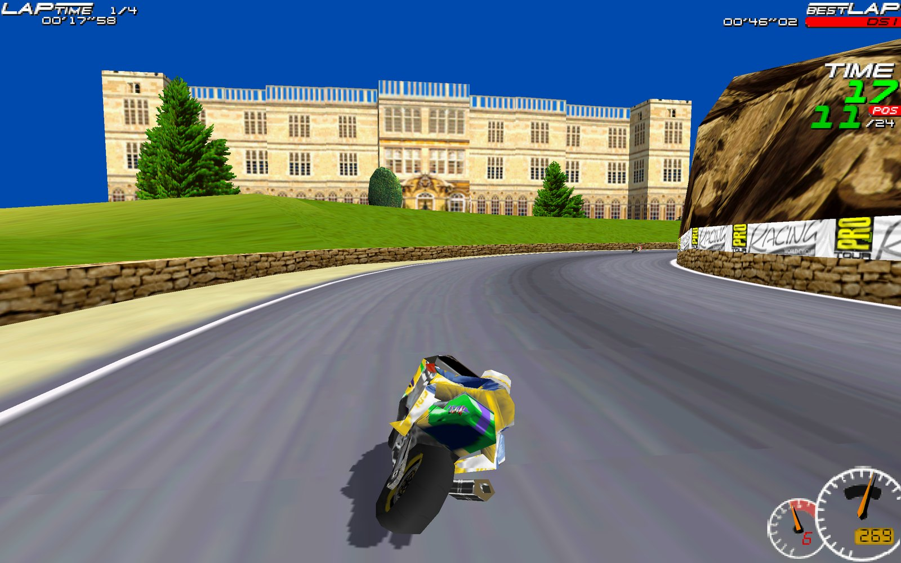
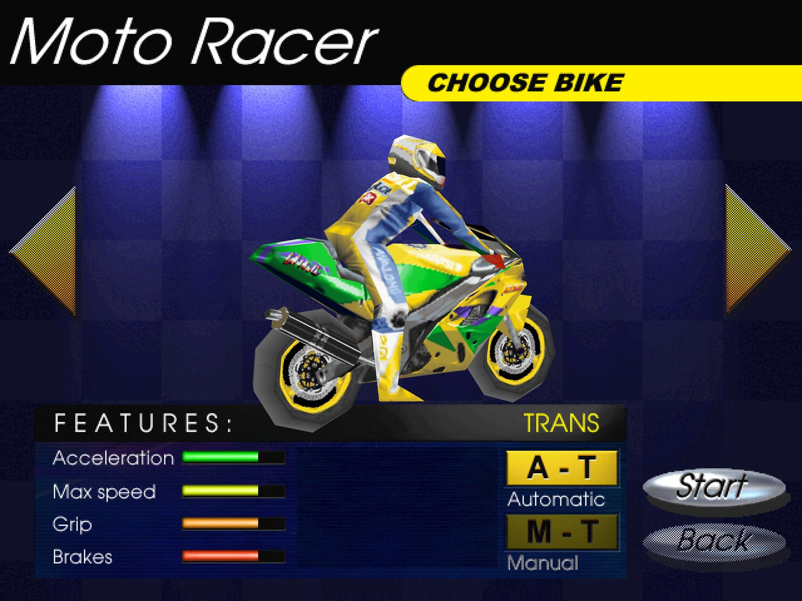
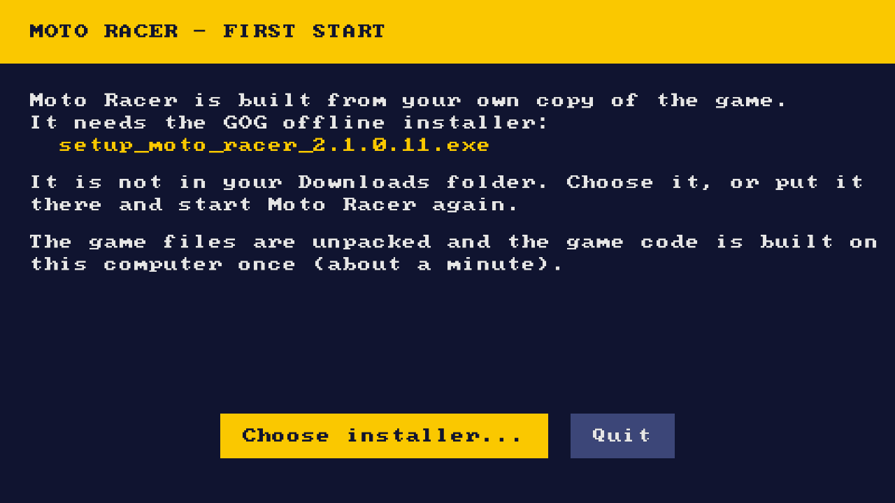

Native everywhere
A real Apple Silicon app, a 64-bit Windows program and a Linux / SteamOS program. The Direct3D renderer runs on Metal, Vulkan or Direct3D 12.

The 1997 Delphine classic in widescreen up to 4K, with gamepads and 120 Hz. Built from your own GOG copy on the first start. No emulator, no Wine.
Needs your own copy: Moto Racer on GOG.
A real Apple Silicon app, a 64-bit Windows program and a Linux / SteamOS program. The Direct3D renderer runs on Metal, Vulkan or Direct3D 12.
The game's own 16/9 mode at native 1280×720 to 3840×2160, or 16:10 at 1280×800 (Steam Deck), 1920×1200 and 2560×1600.
Xbox, PlayStation, Switch Pro, 8BitDo: analog throttle and brake on the triggers, d-pad menus, a ready-made layout.
Frame rates above 60 (120 or 144 Hz) at the original game speed, a longer draw distance and a HUD scaled to the resolution.
The GOG audio tracks play as the original CD soundtrack; sound effects and volume sliders work.
Prefer the 1997 look? The game's software renderer is still there: Options › D3D: OFF.
The same recompiled game runs on a real PSP, every model with custom firmware (PSP-1000 included), drawn by the PSP's own graphics chip: full field of opponents, CD music, PSP controls, about 25–30 fps in races. One command builds the memory-stick package from your GOG installer on a Mac, Linux or Windows PC.


You need your own copy of the game: buy Moto Racer on GOG and download its offline installer setup_moto_racer_2.1.0.11.exe. The downloads here contain no game code or assets.
| System | Download | Needs |
|---|---|---|
| Mac (Apple Silicon) | MotoRacer-macos-arm64.zip | macOS 12 or later |
| Windows | MotoRacer-windows-x86_64.zip | Windows 10 or 11, 64-bit |
| Steam Deck / Linux | MotoRacer-linux-x86_64.tar.xz | x86-64, glibc 2.29 or later |
| PSP | built from the source | any model, custom firmware |
Step-by-step notes for macOS (Gatekeeper), Windows (SmartScreen) and the Steam Deck (adding it to Steam, controller layout) are in the install guide.
PSP: get the source, put the GOG installer in Downloads and run ./setup.sh --psp (Mac, Linux) or setup.cmd --psp (Windows); copy the PSP folder it makes to the memory stick. Details in the PSP guide.

Download MotoRacer-macos-arm64.zip, put the GOG installer in Downloads and open MotoRacer.app. It runs natively on Apple Silicon (macOS 12 or later). The app is not notarized, so the first time use System Settings › Privacy & Security › Open Anyway.
In Desktop Mode, download the GOG installer and MotoRacer-linux-x86_64.tar.xz, extract it, add MotoRacer/motoracer to Steam as a non-Steam game and start it once. Then play from Game Mode at the native 1280×800; pick the Steam controller layout "Gamepad with Joystick Trackpad".
Yes, on every PSP model with custom firmware, PSP-1000 included. Build the package on a Mac, Linux or Windows PC from your GOG installer with ./setup.sh --psp (or setup.cmd --psp on Windows) and copy it to the memory stick: see the PSP guide. Races run at about 25–30 fps with the full field and the CD music.
Yes: Moto Racer Recomp is a native 64-bit Windows program. Extract the zip and run motoracer.exe; no DirectX 5, no compatibility modes.
Yes: the game's own 16/9 mode becomes a true 16:9 picture at up to 3840×2160, and 16:10 modes up to 2560×1600.
Yes. The game is made from your GOG installer on your computer; nothing from the game is distributed here.
No. It is a static recompilation: the original game.EXE is translated to C and compiled into a native program, linked with a runtime that re-implements the Windows, DirectDraw, Direct3D, DirectSound and CD-audio parts the game uses.
Open an issue on GitHub and attach the log file (its location is in the troubleshooting guide).
A recompiler finds every function in the GOG game.EXE and translates each x86 instruction to C: integer operations with exact flags, the x87 FPU, MMX and the software rasterizer's self-modifying code. A runtime provides Win32, DirectDraw, Direct3D execute buffers on SDL_GPU, DirectSound, an emulated CD-audio drive and gamepads. The release packages carry the recompiler and a C compiler, so the game code is built on your own computer from your own copy. The reverse-engineering notes are in the technical docs.